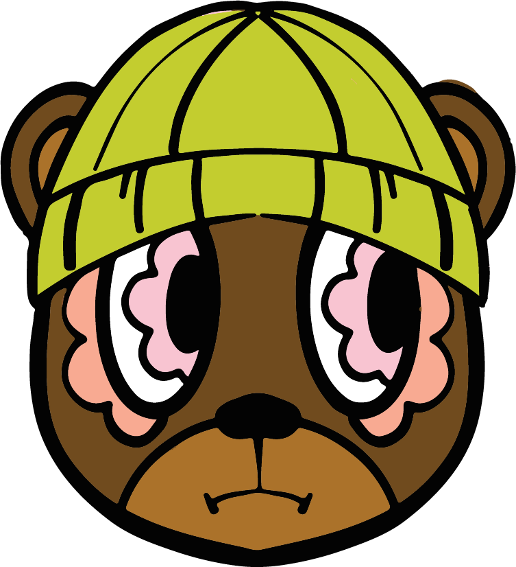

Booyah Bears is a collectible figurine box series inspired by modern trends and urban city culture. Each bear features street-style fashion and nerdy influences like sports, comic, and pop culture, blending playful character design with a bold, contemporary aesthetic. The series is designed to feel like a designer toy—stylish, expressive, and made for collectors who love creativity and city vibes.
THE RESEARCH PROCESS
THE LOGO
The research started off by gathering inspiration from street art; specifically graffiti when working on the logo of the brand itself. It was quite a lengthy process as I had to explore various styles of graffiti art to find the right fit for the brand's identity. However, I settled onto a more clean-cute logo-type to balance out the chaos of the actual design of the boxes.

BOOYAH CHARACTERS
Creating an original appearance for the characters was quite a challenge since the brands figurines needs to have a memorable feature that sets them apart from other collectible toys.
With several attempts and endless researching, I have made the eyes a distinct part about them in their own style and expression since the 'BOO' in Booyah Bears resemble a pair of eyes.
THE SKETCHES
This project started out in my ART125 class with Emily Moody where we listen to the podcasts that were in our curriculum and
we get to choose one to create a book cover for. Given the choice, I ultimately chose Phoebe Judge's Criminal podcast.